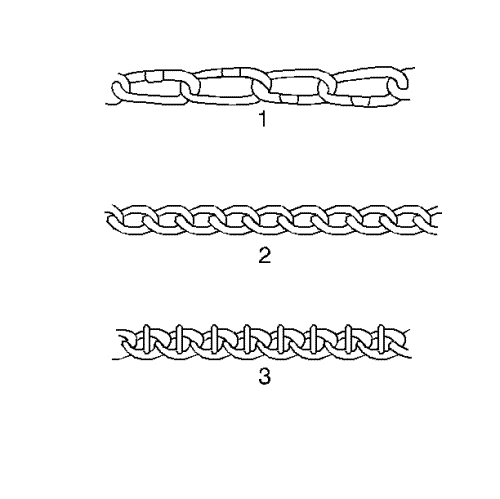

Descripción del uso de las cadenas para neumáticos

Al utilizar cadenas para neumáticos, aquellos vehículos más actuales necesitan los siguientes tipos de cadenas:
| • | Clase S SAE o serie 1100, tipo de cadenas para neumáticos PL (1) |
| • | Clase U SAE o serie 1200, tipo de cadenas para neumáticos P (2) |
| • | Cadenas para neumáticos con saliente de fijación reforzado de la serie 1800 (3) |
Estas cadenas están especialmente diseñadas para limitar el efecto de desacople que tiene lugar al rotar la rueda.
Los fabricantes de cadenas para neumáticos tienen un tamaño de cadena específico para cada tamaño de neumático. Ello garantiza una adaptación adecuada al colocar las cadenas. Compre las cadenas adecuadas para los neumáticos en los que vaya a utilizarlas. No utilice dispositivos de ajuste de goma para reducir la holgura en las cadenas a causa de un tamaño incorrecto. Siga siempre las instrucciones de colocación del fabricante de las cadenas.
La utilización de las cadenas pueden afectar negativamente el manejo. Al utilizar cadenas, acuérdese de la información siguiente:
| • | Asegúrese de que el vehículo está diseñado para la holgura de la cadena. |
| • | Ajuste la velocidad a las condiciones de la carretera. |
| • | Evite frenar con bloqueo de rueda para evitar que la cadena dañe el vehículo. |
| • | Coloque las cadenas tan apretadas como le sea posible en los neumáticos de las ruedas motrices. Apriete las cadenas otra vez tras conducir 0,4-0,8 km (0,25-0,5 mi). No utilice cadenas en los neumáticos de las ruedas no motrices. Estas cadenas pueden entrar en contacto y dañar el vehículo. Si utiliza cadenas en los neumáticos de las ruedas no motrices, asegúrese de que hay suficiente holgura. |
| • | No supere los 70 km/h (45 mph). No supere el límite de velocidad estipulado por el fabricante de cadenas, aunque este sea bajo. |
| • | Conduzca de manera moderada. Evite grandes baches, socavones, giros bruscos y otras maniobras que puedan causar el rebote de los neumáticos. |
| • | Siga cualquier otra instrucción del fabricante que no se contradiga con lo mencionado arriba. |
| © Copyright Chevrolet Europe. All rights reserved |